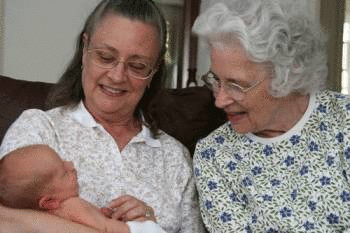
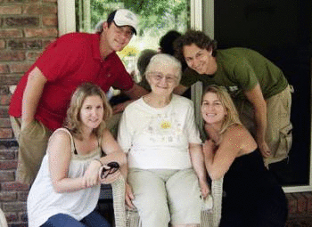

Greatest Grandkids is a non for profit business that provides volunteer service designed to reconnect elderly people in aged care services with society by pairing them with volunteer adults who provide company and friendship with the elderly whose family and friends may be far away. Greatest Grandkids has existed for 3 years in Sydney but has recently moved north to Brisbane and is looking for more volunteers and aged care services to join the Greatest Grandkids Family. 
The goals of Greatest Grandkids vary, the first being to help any elderly people who feel lonely and sometimes excluded from society a friend who is willing to build up a solid friendship and help give the elderly person more self-confidence and independence. With enough support from the community and volunteers Greatest Grandkids can host larger events and instead of focusing on aged care services in general can expand to include any elderly who feel alone and want to make more friendships with members of the community.

Greatest Grandkids provides two primary services to the community, the first being the most common and what Greatest Grandkids is known for, the visiting volunteer program. This involves pairing an old person with a volunteer who share similar interests and personalities, volunteers providing a few hours of their time a month attending Greatest Grandkids events and get together. The volunteers are also there to act as personal health and safety checkers, making sure the aged person they are caring for is well taken care of and if any health problems arise, it is reported to the Greatest Grandkids Liaison.
The second service that Greatest Grandkids provides is the phone/pen pals. These are volunteers who cannot guarantee enough of their time to personally help an aged person but still wish to provide company and support to an aged person.